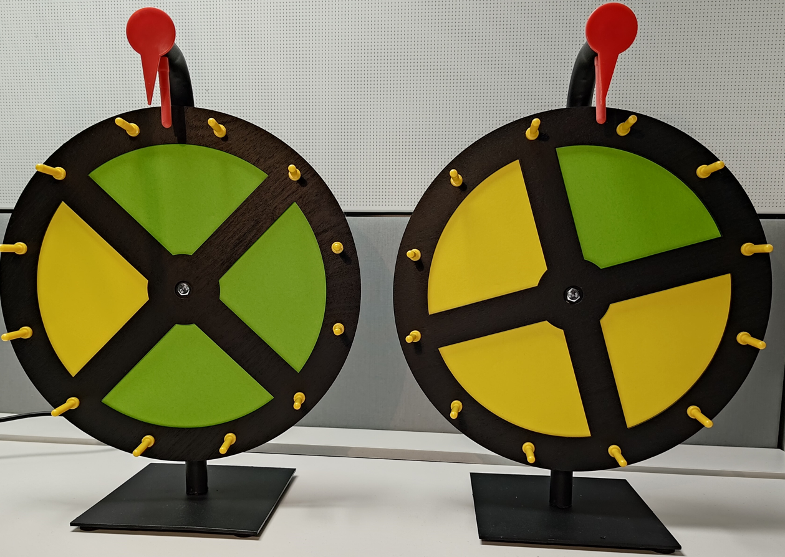
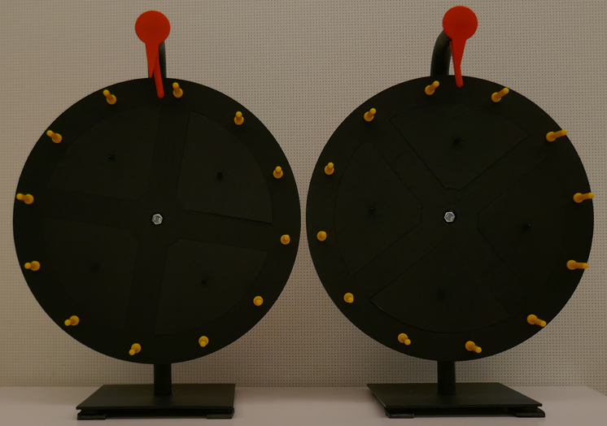
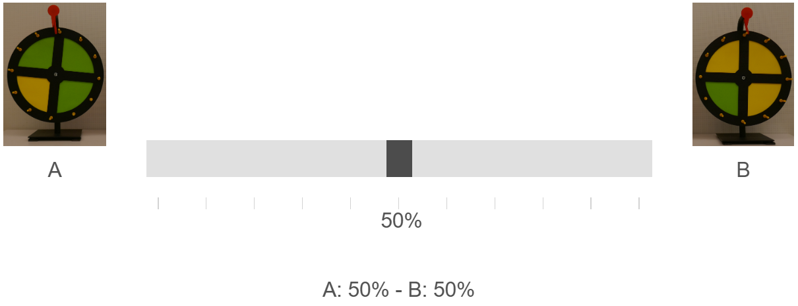

Instructions for the experiment (with bonus wheel)
The two wheels of fortune
In this experiment we use two different "wheels of fortune". Each wheel is divided evenly into four fields. Wheel A (the "green wheel") is three quarters green and one quarter yellow. Wheel B (the "yellow wheel") is three quarters yellow and one quarter green. This set-up is very important for your decisions during the experiment.

During the experiment the coloured fields of the wheels are covered, as in the picture below.

How it works
The experiment has 6 rounds. In each round there is a "selected wheel": either wheel A or wheel B. Because the fields are covered, you cannot see which wheel is the selected wheel.
In each round you see 8 spins. After each spin, the field that the red pointer at the top of the wheel points to is revealed. The sequence of spins was fixed in advance.
Which wheel is the selected wheel of a round is determined at random by the computer, in line with the revealed fields: the more green fields are revealed, the more likely wheel A is the selected wheel; the more yellow fields, the more likely wheel B. The probabilities are exactly the same as if one of the two wheels had been selected at random (50% – 50%) at the start of the round and then spun. So the revealed fields help you judge which wheel is the selected wheel.
Because only one field is revealed at a time, a green or yellow field never tells you for certain which wheel is the selected one. The pointer may also point to the same field several times; you do not know whether that is the case.
The slider
Before the first spin and after every spin, you use a slider to tell us how likely you think it is that the selected wheel is wheel A (green wheel) or wheel B (yellow wheel). Wheel A is shown to the left of the slider, wheel B to the right.

- Middle: both wheels are equally likely (50% each). You are completely unsure.
- To the left: you think wheel A is more likely. The further left, the more certain you are. All the way left means "A: 100% - B: 0%".
- To the right: you think wheel B is more likely. The further right, the more certain you are. All the way right means "A: 0% - B: 100%".
- Display: above the slider you see the probabilities for wheel A and B. They always add up to 100%.
Bonus wheel
At the start of each round you bet on whether wheel A or wheel B is the selected wheel of that round. You place this bet in every round, so 6 times.
At the end of the experiment one round is chosen at random. If you bet on the selected wheel in that round, your bonus for the wheel is €6.00.
Payment
You receive a base payment of €6.00 for taking part and an additional €3.00 for completing the questionnaire at the end.
Bonus for your probability estimates
In each round, one of your nine estimates is chosen at random (before the first spin or after spin 1 to 8). With this estimate you take part in a lottery for €2.00. In total you can win up to €12.00 this way.
The closer your estimate is to the wheel that is the selected wheel of that round, the more winning tickets you receive.
Your chance of winning is highest if you always set the slider to the probability that you yourself believe is correct. This holds regardless of how much you like or dislike risk.
The exact rule
There are 10,000 tickets for the chosen estimate, of which 10,000 − (distance)² are winning tickets. The distance is the difference in percentage points between your estimate for wheel A and 100 if wheel A is the selected wheel, or 0 if wheel B is the selected wheel. Then one ticket is drawn.
Example: you reported 80% for wheel A. If wheel A is the selected wheel, the distance is 20, so 10,000 − 400 = 9,600 winning tickets (96%). If wheel B is the selected wheel, the distance is 80, so 10,000 − 6,400 = 3,600 winning tickets (36%).
| Your estimate for wheel A | Winning tickets if wheel A is selected | Winning tickets if wheel B is selected |
|---|---|---|
| 0% | 0 (0%) | 10,000 (100%) |
| 20% | 3,600 (36%) | 9,600 (96%) |
| 50% | 7,500 (75%) | 7,500 (75%) |
| 80% | 9,600 (96%) | 3,600 (36%) |
| 100% | 10,000 (100%) | 0 (0%) |
Coin flip: which bonus is paid
At the end of the experiment a coin flip decides whether you are paid either the bonuses for your probability estimates or the bonus for the wheel. You never receive both.
This is why it always pays to report your true estimate, regardless of which wheel you bet on.
At the end of the experiment we tell you which wheel was the selected wheel in each round and give you a breakdown of your total payment.